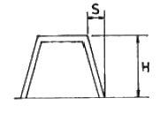
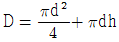
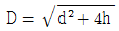

사출(프레스)금형산업기사 (2007-05-13 기출문제)
1과목: 금형설계
1. 그림과 같은 성형품을 사출금형에서 뺄 때 빼기 구배를 일반적으로 얼마로 하는 것이 적당한가? ( 단, H 가 50mm 까지인 경우이다.)

- 1 ~ 1/2
- 1/2 ~ 1/3
- 1/30 ~ 1/35
- 1/50 ~ 1/100
(정답률: 53%)

2. 성형품 치수 150 mm, 성형수촉률 5/1000 일 때 상온의 금형 치수(mm)는 약 얼마인가?
- 140.00mm
- 148.25mm
- 150.75mm
- 155.⑤mm
(정답률: 90%)
3. 다음 단면 형상 중 러너의 효율이 가장 좋은 것은?
- 원형
- 사다리꼴
- 삼각형
- 직사각형
(정답률: 90%)
4. 나사가 있는 경우에 사용하는 성형품의 빼내는 방식이 아닌 것은?
- 경사 이젝터핀 방식
- 회전나사 코어 캐비티 방식
- 고정코어 방식
- 강제빼기 방식
(정답률: 44%)
5. 사출금형의 분류 중 3매 구성 금형의 특징을 잘못 설명한 것은?
- 게이트의 위치를 성형품의 요구하는 위치에 잡을 수 있다.
- 핀 포인트 게이트 사용이 가능하다.
- 고장이 적고 내구성이 우수하며, 성형 사이클을 빨리 할 수 있다.
- 금형 값이 비교적 고가이다.
(정답률: 64%)
6. 사출금형에서 가동측에 해당하는 부품은?
- 로케이트 링
- 스프루 부시
- 가이드핀 부시
- 이젝터 플레이트
(정답률: 73%)
7. 다음 중 싱크 마크(sink mark)의 발생 방지대책이 아닌 것은?
- 사출압력을 낮게 한다.
- 사출속도를 빠르게 한다.
- 수지의 온도를 적절하게 한다.
- 금형의 온도를 균일하게 한다.
(정답률: 61%)
8. 열가소성 수지는 열을 가하면 용융되고 일단 고화된 수지라도 다시 열을 가하면 재사용이 가능하여 사출용 재료로 주로 사용되고 있다. 다음 중에서 열가소성 수지가 아닌 것은?
- 아크릴 수지
- 불소 수지
- ABS 수지
- 페놀 수지
(정답률: 80%)
9. 다음 중 성형품의 이젝터 방식이 아닌 것은?
- 슬리브 이젝터 방식
- 경사 캠과 사이드 코어 이젝터에 의한 방식
- 이젝터 핀에 의한 방식
- 스트리퍼 플레이트 이젝터 방식
(정답률: 66%)
10. 사출성형기의 일반적인 동작순서로 알맞은 것은?
- 금형 닫힘→사출→냉각→금형 열림→성형품 밀어내기→금형 닫힘
- 금형 닫힘→냉각→사출→성형품 밀어내기→금형 열림→금형 닫힘
- 금형 닫힘→금형 열림→냉각→사출→성형품 밀어내기→금형 닫힘
- 금형 닫힘→금형 열림→성형품 밀어내기→냉각→사출→금형 닫힘
(정답률: 83%)
11. 펀치나 다이에 전단각(shear angle)을 주는 이유 중 가장 옳은 것은?
- 전단하중을 줄이기 위하여
- 전단면을 아름답게 하기 위하여
- 펀치나 다이를 보호하기 위하여
- 다이에 비하여 펀치의 파손을 방지하기 위하여
(정답률: 85%)
12. 압인, 사이징 등의 압축 가공에 적합하며 현재는 냉간 단조에 가장 많이 사용되고 있는 프레스 기계는?
- 너클 프레스
- 링크 프레스
- 마찰 프레스
- 크랭크 프레스
(정답률: 79%)
13. U- 굽힘 가공에서 스프링 백의 방지법이 아닌 것은?
- 펀치의 내측에 쿠배 클리어런스를 만든다.
- 펀치의 측면에 릴리프를 만든다.
- 패드 장치를 하여 패드 압력을 적당히 조절한다.
- 다이 측면에 구배 클리어런스를 만든다.
(정답률: 60%)
14. 프레스금형 설계시 섕크(shank)의 위치를 결정하는 방법이 아닌 것은?
- 나사를 이용한 위치 계산
- 펀치의 외곽선 중심을 이용한 위치 계산
- 선 중심을 이용한 위치 계산
- 면 중심을 이용한 위치 계산
(정답률: 60%)
15. 드로잉 작업에서 블랭크의 지름 D, 성형품의 지름 d, 성형품의 높이 h, 밑 바닥부의 구석 r은 없는 것으로 표시할 때 블랭크지름 D을 구하는 식으로 옳은 것은?
- D = πd2 + πdh

- D = d2 + 4dh – 1.72d

(정답률: 69%)
16. 다음 중 펀치(punch)고정 방법으로 적합하지 않는 것은?
- 키에 의한 고정
- 클램프에 의한 고정
- 용접에 의한 고정
- 볼트에 의한 고정
(정답률: 85%)
17. 판 두께 0.5mm인 규소강판에 가로세로 각각 20mm의 사각 구멍을 블랭킹 하는 경우의 최대 전단하중(kgf)은 약 얼마 인가? (단, 규소강판의 전단저항은 45kgf/mm2)
- 900kgf
- 1800kgf
- 3600kgf
- 9000kgf
(정답률: 69%)
18. 분할 금형은 제품의 형상이 복잡하고, 펀치나 다이를 일체로 제작하기 어려울 때 분할 가공하여 이를 조립하여 제작 하는 것을 말한다. 분할 금형의 특징에 해당 되지 않는 것은?
- 다이 파손시 수리가 용이하다.
- 낮은 정밀도의 금형이 제작된다.
- 열처리에 의한 변형은 연삭에 의해 쉽게 수정되거나 조정이 가능하다.
- 기계가공의 이용이 용이하다.
(정답률: 84%)
19. 순차 이송 금형에서 피어싱 가공된 구멍을 이용하여 정확한 가공 소재의 위치를 결정하여, 제품의 형상에 따라 트랜스퍼 금형에도 사용되는 것은?
- 녹아웃 핀
- 이젝터 핀
- 파일럿 핀
- 사이트 커터
(정답률: 87%)
20. 펀치의 바깥쪽의 누름면에 삼각형의 돌기(bead)를 설치하여 블랭킹 하는 가공을 무엇이라 하는가?
- 정밀 블랭킹
- 컬링
- 셰이빙
- 일평면 커팅
(정답률: 74%)
2과목: 기계가공법 및 안전관리
21. 롤러의 중심거리 100mm 사인바(sin bar)로 24°의 각도를 만들려고 한다. 낮은 쪽의 게이지블록의 높이를 15mm로 하면 높은 쪽은 약 얼마인가?
- 25.756mm
- 45.675mm
- 51.647mm
- 55.674mm
(정답률: 39%)
22. 공작물과 같은 형상으로 제작된 모델에 따라 제품을 절삭하는 것은?
- 정면절삭
- 모방절삭
- 보링절삭
- 나사절삭
(정답률: 90%)
23. NC선반 프로그램 작성시 주축의 회전속도를 지령하는 기능은 어느 코드를 사용하는가?
- G 코드
- S 코드
- T 코드
- M 코드
(정답률: 90%)
24. CNC 와이어 컷 방전가공시 주로 사용하는 가공액은?
- 콩기름
- 염화나트륨 수용액
- 휘발유
- 순수한 물
(정답률: 86%)
25. 대량생산용 다이캐스팅 금형재료로 가장 적당한 것은?
- STD61
- SM20C
- STC3
- SM45C
(정답률: 50%)
26. 금형에 표면처리를 하는 목적이 아닌 것은?
- 내마멸성 증가
- 내충격성 증가
- 윤활성 감소
- 금형강도 증가
(정답률: 86%)
27. 머시닝센터 프로그램에 사용되는 준비 기능에 있어서 지름 보정 취소 기능은?
- G41
- G42
- G43
- G40
(정답률: 84%)
28. 연강용 드릴의 표준 선단 각도는?
- 118°
- 120°
- 130°
- 100°
(정답률: 82%)
29. 다음 중 소성 가공 작업이 아닌 것은?
- 호닝 가공
- 압출 가공
- 인발 가공
- 전조 가공
(정답률: 55%)
30. 다음 중 강의 열처리 조작에서 가장 경화된 조작은?
- 오스테나이트
- 트루스타아트
- 마텐자이트
- 솔바이트
(정답률: 66%)
31. 제품의 정밀도 보다는 생산속도의 증가를 목적으로 최소의 경비로 가장 단순하게 사용할 수 있는 지그는?
- 샌드위치 지그
- 박스 지그
- 채널 지그
- 템플릿 지그
(정답률: 79%)
32. 판 스프링, 코일 스프링, 기어 등에 많이 사용하는 특수가공인 숏 피닝의 가장 큰 목적은?
- 피로한도 증가
- 표면경도 증가
- 표면다듬질
- 인장강도 증가
(정답률: 68%)
33. 일반적으로 강을 래핑 할 때 사용하는 랩(lap)으로 가장 적합한 것은?
- 주철
- 탄소강
- 고속도강
- 초경합금
(정답률: 55%)
34. 호닝 머신에서 내면 가공시 공작물에 대한 혼은 어떤 운동을 하는가?
- 직선왕복 운동
- 회전운동
- 상하운동
- 회전 및 직선왕복운동
(정답률: 86%)
35. 다음 중 절삭유의 사용 목적을 설명한 것이다. 틀린 것은?
- 공구와 칩의 친화력을 돕는다.
- 공구의 냉각을 돕는다.
- 공작물의 냉각을 돕는다.
- 가공표면의 방청작용을 돕는다.
(정답률: 81%)
36. CAD/CAM 시스템과 CNC기계를 근거리 통신망으로 연결하여 1대의 컴퓨터에서 여러 대의 CNC공작기계에 데이터를 분배하여 전송함으로써 동시에 운전할 수 있는 방식을 무엇이라 하는가?
- CAD
- DNC
- FMS
- FMC
(정답률: 85%)
37. 다음 중 방전 가공에 대한 설명이다. 잘못 설명한 것은?
- 초경합금도 가공할 수 있다.
- 가공 후 가공 변질층이 남는다.
- 전기 부도체인 공작물도 가공할 수 있다.
- 임의의 단면 형상의 구멍 가공도 할 수 있다.
(정답률: 62%)
38. 연삭 가공으로 인해서 숫돌바퀴의 바깥 둘레가 변형된 것을 바로 잡기 위해서 숫돌 외형을 수정하는 작업은?
- 로딩
- 리밍
- 트루잉
- 금형강도 증가
(정답률: 66%)
39. 다음 중 호닝(honing)작업 방식이 아닌 것은?
- 자유 호닝 방식
- 숫돌 가압 방식
- 강제 호닝 방식
- 공작물 가압 방식
(정답률: 58%)
40. 도체 및 부도체 가공이 가능하고, 유리기구에 눈금, 무늬 등을 조각하며, 수정, 반도체, 세라믹 등의 재질에 미세한 구멍가공과 절단을 하는 경우에 사용되는 가공법으로 가장 적당한 것은?
- 밀링 가공
- 호닝 가공
- 초음파 가공
- 와이어컷팅 가공
(정답률: 70%)
3과목: 금형재료 및 정밀계측
41. 다음 중 열팽창계수가 적어 바이메탈 재료로 가장 적합한 것은?
- 두랄루민
- 화이트메탈
- 포금
- 인바
(정답률: 40%)
42. 만능 재료시험기(universal tester)를 이용하여 인장시험을 하였다. 표점거리 140mm, 지름10mm인 시편이 최대하중 1570 kgf에서 절단되었을 때 표점거리가 157mm 이었다. 이때의 인장강도는?
- 10 kgf/mm2
- 20 kgf/mm2
- 80 kgf/mm2
- 100 kgf/mm2
(정답률: 55%)
43. 다음에 열거한 플라스틱 재료 중 열가소성 수지로 나열된 것은?
- 페놀, 폴리에틸렌, 폴리카보네이트
- 폴리스티렌, 아크릴, 페놀
- 폴리에틸렌, 염화비닐, 폴리아미드
- 페놀, 에폭시, 멜라민
(정답률: 71%)
44. 일반적으로 다이캐스팅 금형 구조에서 리턴핀에 사용되는 금형재료로 가장 적합한 것은?
- SM25C
- SM45C
- Al
- STC3
(정답률: 77%)
45. 다음 중 금형 다이, 칼, 절단장치 등의 공구를 제작하기 위하여 경도를 증가시켜 내마멸성을 향상시키기 위한 열처리 방법으로 가장 적합한 것은?
- 풀림
- 담금질
- 뜨임
- 불림
(정답률: 75%)
46. 다음 중 신소재의 기능성 재료에 해당하지 않는 것은?
- 형상기억 합금
- 초소성 합금
- 제진 합금
- 초경 합금
(정답률: 66%)
47. 다음 중 경금속과 중금속 구분의 경계가 가장 가까운 금속으로 비중이 약 4.54이고, 용융점이 높고, 열전도율이 낮으며 상온에서 조밀육방격자 구조를 지니고 있는 것은?
- 은
- 금
- 알루미늄
- 티탄
(정답률: 70%)
48. 다음 중 블랭킹 및 피어싱 펀치로 사용되는 금형재료가 아닌 것은?
- STD11
- STS3
- STC3
- SM15C
(정답률: 66%)
49. 다음 중 순 금속의 열전도율이 높은 것에서부터 낮은 순서대로 옳게 나타낸 것은? (단, 20°C 에서의 열전도율이다.)
- Ag → Cu → Au → Zn → Al
- Ag → Au → Cu → Al → Zn
- Ag → Cu → Au → Al → Zn
- Au → Ag → Cu → Al → Zn
(정답률: 54%)
50. 6-4 황동에 1~2% Fe을 첨가한 것으로, 강도가 크고 내식성이 좋아 광산기계, 선박용 기계, 화학기계 등에 사용하는 황동은?
- 에드미럴티 황동
- 네이벌 황동
- 델타메탈
- 톰백
(정답률: 58%)
51. 알고 있는 기준치수와 측정물과의 편차를 구하여 치수를 알아내는 측정은?
- 절대 측정
- 비교 측정
- 기준 측정
- 직접 측정
(정답률: 76%)
52. 지름 8mm, 길이 100mm인 환봉의 길이를 외경마이크로미터로 1kgf 의 힘을 가하여 측정하면 길의의 변형량은? (단, 세로탄성 계수는 E = 2×104kgf/mm2으로 한다.)
- 0.0001 mm
- 0.0015 mm
- 0.00001 mm
- 0.015 mm
(정답률: 39%)
53. 200mm의 사인 바로서 30° 각을 만들려면 게이지블록의 양 중심점에서의 높이 차는 얼마로 하여야 되는가?
- 120mm
- 100mm
- 110mm
- 95mm
(정답률: 68%)
54. 구멍용 한계 게이지가 아닌 것은?
- 봉 게이지
- 판형 플러그 게이지
- 스냅 게이지
- 평형 플러그 게이지
(정답률: 54%)
55. 공작물의 진원도 측정법이 아닌 것은?
- 실린더 게이지를 이용한 직경법
- 게이지 블록을 이용한 삼점법
- V블록을 이용한 삼점법
- 센터지지에 의한 반경법
(정답률: 42%)
56. 공작기계 베드면의 진직도 측정에서 오토콜리메이터와 함께 사용하는 측정기는?
- 정밀 수준기
- 직각자
- 클리노미터
- 투영기
(정답률: 43%)
57. 표면 거칠기를 나타내는 방법이 아닌 것은?
- 최대 높이 거칠기
- 산술 평균 거칠기
- 면적 평균 거칠기
- 10점 평균 거칠기
(정답률: 44%)
58. 나사 마이크로미터는 나사의 어느 부분 측정에 주로 사용 하는가?
- 유효 지름
- 피치
- 바깥 지름
- 리드
(정답률: 70%)
59. 다음 중 전기 마이크로미터의 길이 변화를 전기신호로 바꾸는 장치로서 가장 많이 쓰이는 것은?
- 캐퍼시턴스식
- 인덕턴스식
- 차동 변압기식
- 스트레인 게이지식
(정답률: 63%)
60. 다음 측정기 중에서 공작물의 실제치수를 직접 알수 없는 측정기는?
- 버니어캘리퍼스
- 마이크로미터
- 하이트 게이지
- 다이얼 게이지
(정답률: 62%)